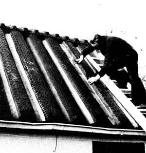

"Everybody talks about the mountains of old tires that constantly stack up in the industrialized nations," Mark Twain might say if he were still alive, "but nobody does anything about them."
Nobody, that is, but Karl-Ernst Kerkhof of Alfstet (near Bremerhaven), Germany. Mr. Kerkhof decided he'd both [1] do the environment a good deed by disposing of surplus used tires, and [2] cut down on the consumption of roofing materials ... by, as you've probably guessed, finding a way to substitute the first for the second.
And he did. Kerkhof has now patented a method of cutting the sidewalls away from the tread portion of an old tire ... and then using as many sections of tread as he needs to cover a roof. As the accompanying photograph shows, Mr. Kerkhof alternates upside-down strips of the rubber with rightside-up bands all the way across the surface he's covering. What the picture does not show is his "secret" way of gluing the long, rubber "tiles" together and the fact that he uses only rust-free nails to fasten the flexible "shingles" to the structure underneath.
"There's no doubt about it," says Karl-Ernst Kerkhof. "This roofing will outlast most present-day houses and buildings." Which is, perhaps, the reason that Mr. Kerkhof has already shingled a number of new homes in his part of Germany with his rubber tires. . . ah, tiles ... ah, with his patented strips of roofing.
|
 |
|
|